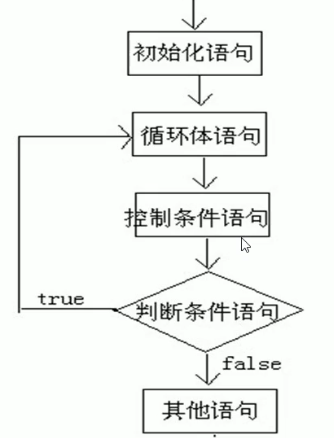

原文连接:https://www.cnblogs.com/hpcz190911/p/11695146.html
2019-10-17-20:21:22
顺序结构：
概述：顺序执行，根据编写的顺序，从上到下执行语句
判断语句1-if：
if语句第一种格式：
if（关系表达式）{
语句体;
}
执行流程：
1.首先判断关系表达式看其结果时true还是false
2.如果是true就执行语句体
3.如果是false就不执行语句体
判断语句2-if...else：
if（关系表达式）{
语句体1;
}else{
语句体2;
}
执行流程：
1.首先判断关系表达式看其结果时true还是false
2.如果是true就执行语句体1
3.如果是false就执行语句体2
判断语句3-if...else if...else
if（判断条件1）{
执行语句1;
}else if（判断条件2）{
执行语句2;
}
...
}else（判断条件n）{
执行语句n;
}
●执行流程
1.首先判断关系表达式1看其结果是true还是false
2.如果是true就执行语句体1
3.如果是false就继续判断关系表达式2看其结果是true还是false
4.如果是true就执行语句体2
5.如果是false就继续判断关系表达式..看其结果是true还是false
. ...
选择语句--switch
switch(表达式) {
case常量值1:
语句体1;
break;
case常量值2:
语句体2;
break;
default:
语句体n+1;
break;
}
循环语句1--for
for(初始化表达式①;布尔表达式②;步进表达式④){
循环体③
}
●执行流程
1.执行顺序:①②③④>②③④>②③..不满足为止。
2.①负责完成循环变量初始化
3.②负责判断是否满足循环条件，不满足则跳出循环
4.③具体执行的语句
5.④循环后，循环条件所涉及变是的变化情况
循环语句2--while
初始化表达式①
while(布尔表达式②){
循环体③
步进表达式④
}
●执行流程
1.执行顺序:①②③④>②③④>②③④..②不满足为止。
2.①负责完成循环变量初始化。
3.②负责判断是否满足循环条件,不满足则跳出循环。
4.③具体执行的语句。
4.④循环后，循环变量的变化情况。

循环语句3--do...while
初始化表达式①
do{
循环体③
步进表达式④
}while(布尔表达式②);
●执行流程
1.执行顺序:①③④>②③④>②③④...②不满足为止。
2.①负责完成循环变量初始化。
3.②负责判断是否满足循环条件,不满足则跳出循环。
4.③具体执行的语句
5.④循环后，循环变量的变化情况

三种循环语句的区别
1.如果条件判断从来没有满足过，那么for循环和while循环将会执行0次，但是do-while循环会执行至少一次。
2.for循环的变量在小括号当中定义，只有循环内部才可以使用。while循 环和do-while循环初始化语句本来就在外面，所以出来循环之后还可以继续使用
建议：凡是次数确定的场景多用for循环，否则多用while循环
break的使用方法
1.可以用在switch语句当中， 一旦执行，整个switch语句立刻结束
2.还可以用在循环语句当中，一旦执行，整个循环语句立刻结束。打断循环。
continue的使用方法
一旦执行，立刻跳过当前次循环剩余内容，马上开始下一次循环
循环嵌套
概念：所谓嵌套循环，是指一个循环的循环体是另一个循环。比如for循环里面还有一个for循环，就是嵌套循环。总共的循环次数=外循环次数*内循环次数
格式：
for(初始化表达式①;循环条件②;步进表达式⑦) {
for(初始化表达式③;循环环条件④;步进表达式⑥) {
执行语句数⑤;
}
}
●嵌套循环执行流程:
1.执行顺序:①②③④⑤⑥>④⑤⑥>⑦②③④⑤⑧>④⑤⑥
2.外循环一次，内循环多次，
3.比如跳绳一共跳5组，每组跳10个。5组就是外循环，10个就是内循环。
把国庆这几天没发博客的内容都发一次吧，积攒了好多没法